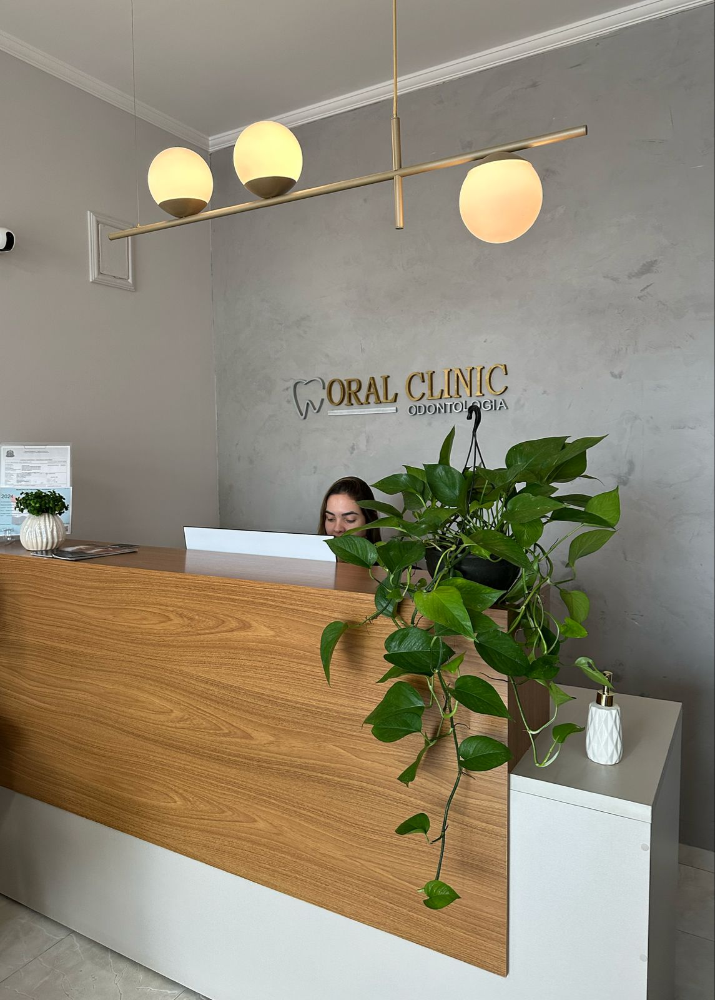
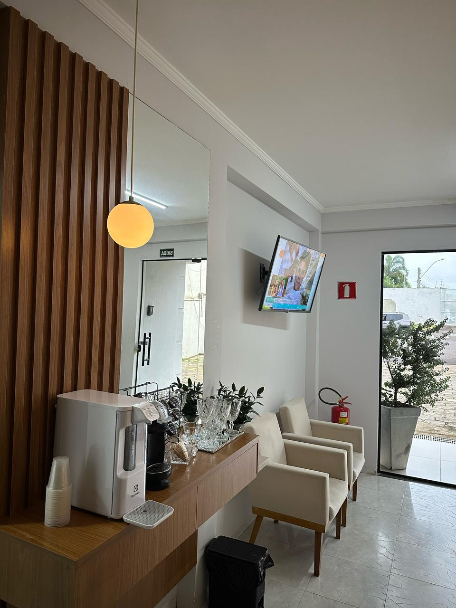
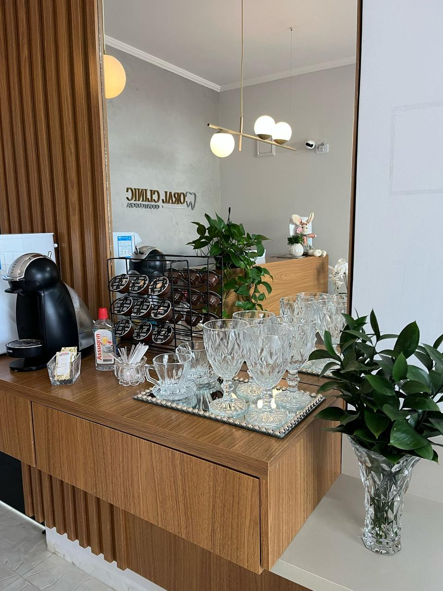
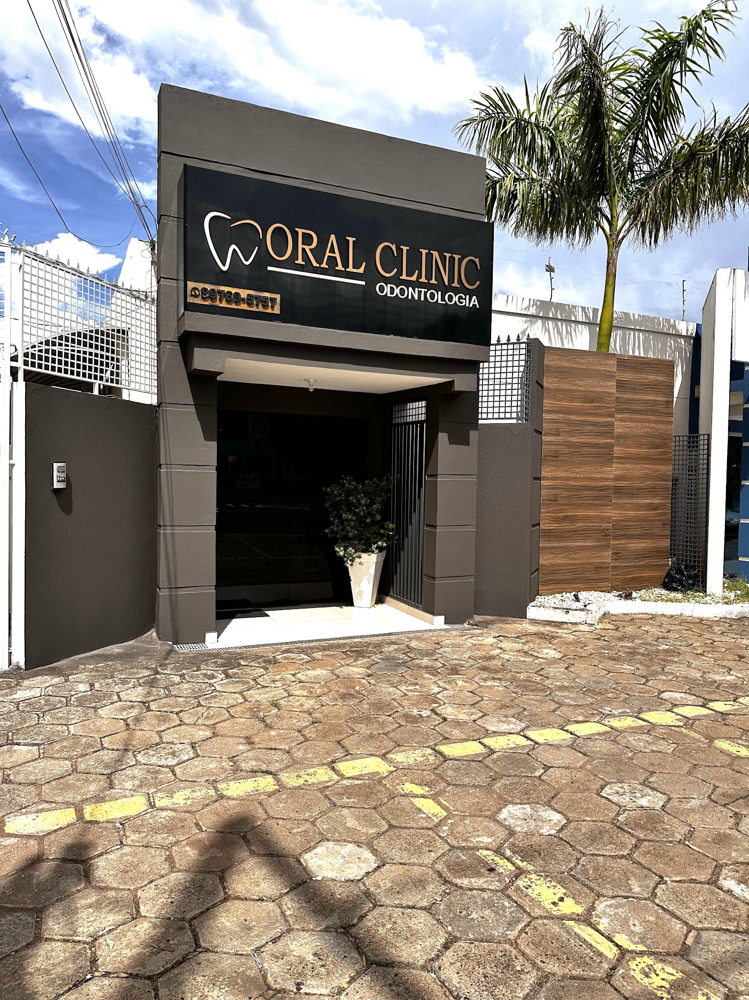

Clínica odontológica
Um ponto de partida para conversar sobre a sua saúde bucal, suas dúvidas e os cuidados do dia a dia.
PRESIDENTE PRUDENTE, SP
Antes de qualquer tratamento, queremos ouvir você.
Conheça a Oral Clinic e encontre o seu próximo passo
para cuidar da saúde bucal.

O cuidado está nos detalhes.
E começa na primeira visita.
Na Rua Dr. Cyro Bueno, a Oral Clinic recebe você em um espaço com luz natural, plantas e uma recepção para fazer uma pausa antes da consulta.
Traga suas dúvidas. A equipe pode orientar sobre o atendimento e ajudar você a organizar sua visita.
Conheça nosso espaço ↘

Converse com a equipe sobre as áreas de atendimento e a avaliação indicada para o seu caso.
Um ponto de partida para conversar sobre a sua saúde bucal, suas dúvidas e os cuidados do dia a dia.
Avaliação individual para entender as possibilidades de reposição de dentes e planejar o tratamento.
Orientação sobre alinhamento dentário e mordida, com planejamento a partir de uma avaliação clínica.
Atenção à saúde bucal das crianças. Consulte a equipe para saber como organizar a primeira visita.
Áreas informadas no perfil da clínica no Google. A indicação de qualquer tratamento depende de avaliação profissional.
★★★★★
“Excelente em tudo atendimento e profissionalismo. Nota 10.”Ver avaliação original ↗
★★★★★
“Ótimo atendimento, ambiente agradável, com ótimos profissionais, eu recomendo”Ver avaliação original ↗
★★★★★
“Ótimo atendimento, e muito profissionalismo, já sou paciente a tempos!”Ver avaliação original ↗
★★★★★
“Ótimos profissionais, excelente atendimento. Super indico Amo o atendimento.”Ver avaliação original ↗
★★★★★
“A melhor clínica que já fui!! Dra. Ana Paula incrível em cada atendimento, parabéns para a equipe!!!”Ver avaliação original ↗
Fonte: Google Maps · consulta em 07/11/2026.
A nota e o total de avaliações podem mudar.

É aqui que a gente se encontra.04 / VENHA NOS CONHECER
Confirme a disponibilidade e os horários em feriados antes da visita.
Entrada e estacionamento acessíveis, conforme o perfil da clínica no Google.
ANTES DA PRIMEIRA VISITA
A gente começa por aí.
Entre em contato pelo telefone (18) 99769-5757 ou pelo botão de conversa. Confirme com a equipe os horários disponíveis e o atendimento desejado.
Uma avaliação odontológica é o primeiro passo. O profissional examina sua saúde bucal, ouve suas necessidades e explica as opções indicadas para você.
O perfil da Oral Clinic no Google informa atendimento em odontopediatria. Fale com a equipe para confirmar a disponibilidade e organizar a consulta.
Consulte a equipe pelo telefone (18) 99769-5757 para confirmar convênios, valores e condições de pagamento antes do agendamento.
VAMOS COMEÇAR PELO OLÁ?